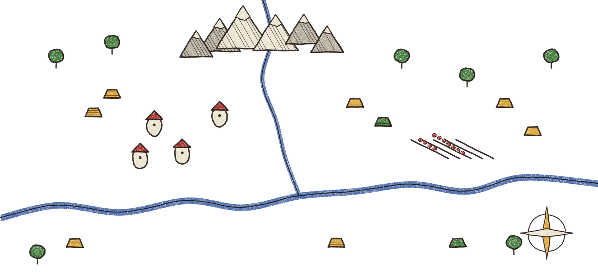

%27%20height=%27calc(100%%20-%206px)%27%20fill=%27rgba(140,86,41,0.18)%27%20stroke=%27%23B02A23%27%20stroke-width=%273%27%20stroke-dasharray=%2710%207%27%20rx=%2710%27/%3E%3Ctext%20x=%2750%%27%20y=%2750%%27%20text-anchor=%27middle%27%20font-family=%27sans-serif%27%20font-size=%2713%27%20font-weight=%27700%27%20fill=%27%23B02A23%27%3EARTE%20PENDIENTE%3C/text%3E%3C/svg%3E)
I · Tierra de Campos
II · Montaña Palentina
AQUÍ ESTÁS
III · Ribera del Duero
?
IV · Feria de ganado
V
Casino de la capital
LA GIRA
de taberna en taberna, hasta la capital
Honra
●●○
Reales
23
Cara
64
Compañero
el Pastor
el Pastor
Etapa III · Ribera del Duero
Dos parroquianos y Don Anselmo, el Cura, que envida siempre a la Chica.